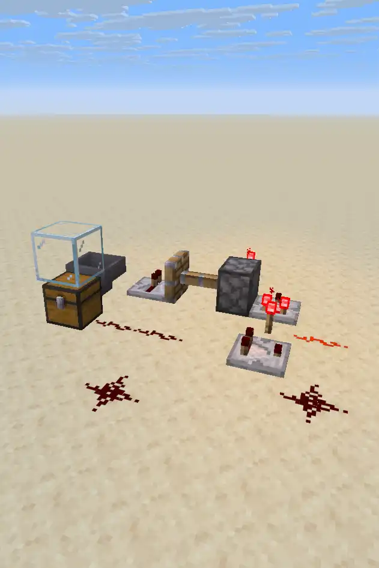

Welcome to Redstone 101
The purpose of this site is to educate other about the workings of redstone. Here you will find simple instructions and explamations on how to buld bolth simple and complex contraptions. The goal of this site is to not only provide you with simple tutorials, but to also educate on how they work so that you can edventually be educated enough to create and troubbleshoot your own contraptions, with out the help of others. It is important to note that these will only work in the most Java edition of minecraft.(1.21.11)
